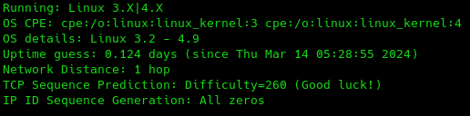

Cuando nosotros queremos explotar una vulnerabilidad en un sistema determinado, con el objetivo de obtener acceso a ese sistema, de elevar privilegios o cualquier otra acción.
Una de las cosas más importantes es conocer el sistema operativo que tiene instalado ese equipo.
https://nmap.org/book/man-os-detection.html
Comandos:
-O (Enable OS detection)
sudo nmap -v -O 192.168.20.128
